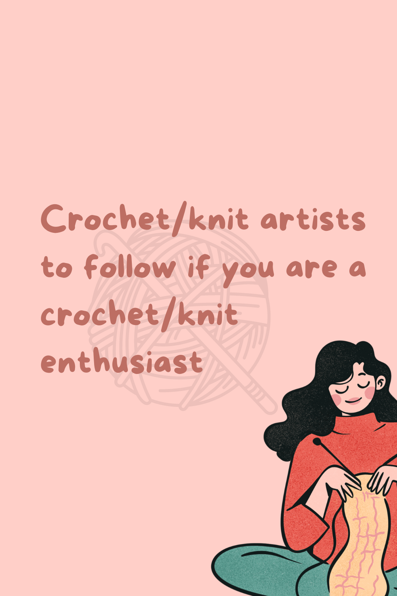

Crochet/knit artists to follow and find inspiration
If you're a crochet or knit enthusiast looking for inspiration or experienced artists to follow, here's a curated list just for you:
-
Dose of Diallo
Fatima Diallo, the creator behind Dose of Diallo, is a remarkable Guinean and French-American designer based in the US. Her unconventional approach to crochet and knitting will leave you in awe. From using denim in her crochet work to combining both crochet and knit techniques, Fatima constantly pushes the boundaries of the craft. Check out her Instagram page and her website doseofdiallo.com/ for a dose of creativity.
-
Knottygirlthreads:
Prepare to be amazed by the crochet pieces crafted by Knottygirlthreads. This talented artist creates intricate designs that incorporate built-in jewelry, making her work truly unique. From pieces inspired by favorite books to beloved cartoon characters, her creations showcase her exceptional skills. Follow her on Instagram and Knottygirlkthreads.univer.se to explore her stunning creations.
-
Yarnover NG:
Yarnover NG is an account owned by a Nigerian crochet and knit artist. Her creations are instantly recognizable for their beautiful color combinations and range from elegant corsets to cozy balaclavas. Each piece is thoughtfully designed and visually appealing. Discover her captivating work on instagram and visit her website www.yarnoverng.com to explore her portfolio.
-
Work from beach be like:
For knitwear with a touch of glamour, Work from beach be like is the brand to follow. They specialize in using sequin yarn to create stunning pieces. In addition to their creations, they also sell sequin yarn for fellow knitting enthusiasts. Find their enchanting creations on Instagram and explore their products on their website www.workfrombeachbelike.com.
-
WildXdandi:
WildXdandi is an artist whose passion for flowers shines through in her crochet creations. Almost every piece incorporates a floral element, resulting in unique and eye-catching designs. Recently, she has expanded her skills to include knitting, and her knitted creations are just as impressive. Follow her on Instagram and visit her website https://shopwildxdandi.com to explore her imaginative work.
Here are a few more accounts you might find inspiring:
Tkorcouture:
Instagram
Website: https://tkorcouture.carrd.co/Stitched by Emma:
Instagram
Website: https://linktr.ee/stitchedbyemma?utm_source=linktree_profile_shareMiazza Couture:
Instagram
Website: www.miazzacouture.com
Remember, this list is just a starting point, and there are many other talented crochet and knit artists out there.
TOPS
Bikini sets
Tote bag

Skirts